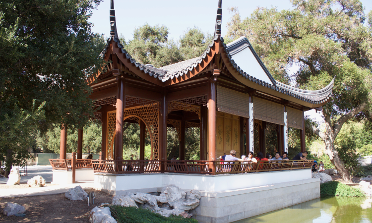

Introduction
I’m Rachel Atmadja—a digital product designer with roots in architectural design.
I received my design education from the School of Architecture at Cal Poly San Luis Obispo and worked as an architectural designer—the venerable Los Angeles firm Koning Eizenberg Architecture was the last architectural studio I had the honor to join.
My transition from the design of architectural spaces to the design of digital spaces is rooted in a desire to build frameworks that facilitate meaningful human interactions. By transitioning into digital product design, I shifted the scale of my medium in such a way that my creative output will now have the possibility to impact people at a more personal and relational level.
And so I entered into a full-time apprenticeship under a senior UX designer and cut my teeth on digital product design—starting with the design of a meal-planning app from a plant-based perspective and a dashboard designed for remote collaboration.
I have been designing and building digital products ever since. It turns out I never really stopped building things after all.
Which buildings have you worked on?
I have worked alongside cross-functional design and engineering teams on a residential high-rise at San Francisco, the U.S. Bank (Vikings) Stadium, and the Naval Hospital at Camp Pendleton.
What would you like to work on?
Designing experiences and building digital products that empower underserved and marginalized user groups are close to my heart.
I think that designers are uniquely poitioned to make people feel seen and heard by the works of our hands.
I believe that building thoughtful products for people who are unaccustomed to having their needs be heard is a powerful way to remind them (and ourselves) of the inherent dignity we possess as humans—no matter what life circumstances we have gone through.
Why are you a designer?
Growing up, I was mesmerized by the beauty and precision of systems.
More specifically, the way repetitive kits-of-parts can be combined in endless permutations to create different structures that serve specific purposes.

My brother told me that when we were kids, he distinctly remembered me pushing away Barbie dolls and reaching for the boxes of Lego’s.
My parents saw that I had an aptitude for building things and encouraged it. While most dads would buy their little daughters easy-bake ovens and stuffed animals, my dad bought me the lego set of a medieval fortress, complete with a drawbridge.
It came with the most beautiful construction manual I have ever seen: an exploded axonometric drawing of the castle where I could see how every single lego component combine to form the superstructure. It was perfectly rendered with the appropriate line weights to communicate depth and hierarchy to six-year-old me.
Ultimately, it was this fascination with beauty and utility that led me to pursue design as a profession.
Why did you transition from architecture to product design?
In order to impact people at an emotional and relational level, I needed to shift from designing the tectonics of static building systems—to designing the behavior of responsive digital systems.
After six years of solving tectonic problems in building systems—I realized that although the scale of buildings enable architects to shape the way people interact with their physical environments, the creative outputs (magnificent buildings as they are) tend to be immutable objects that do not change with its occupants.
Buildings tend to be impersonal objects in the sense that there is no real dialogue between it and its occupants. Perhaps it is no accident that great architecture are often described as a beautiful, different kind of silence.
I found that the closest thing to a personal dialogue that humans can have with designed systems is in the realm of human-computer interaction, where a responsive digital system responds to something as personal as a touch of a finger or a human voice.
Subsequently, I discovered that my systems-oriented approach to problem solving and ability to see granular levels of detail without losing sight of the big picture lend themselves particularly well to designing the behavior of responsive digital systems.
What do you do outside of work?
I still build things.
I sketched, prototyped, and constructed a line of table furniture inspired by architectural hardware pieces and other objects of industry. I also practice floral-arranging in my spare time. To put my floral design skills to good use, I arrange bridal bouquets for friends and took orders for mother’s day floral arrangements.
Objects that are simultanenously beautiful and useful fascinate me. I recently began appreciating the microscopic beauty of letterforms. It turns out I have a fondness for serifed typefaces with classical proportions.